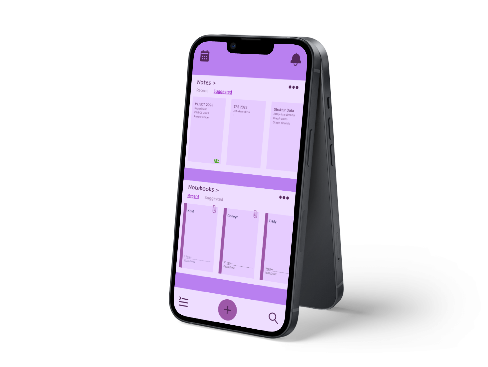
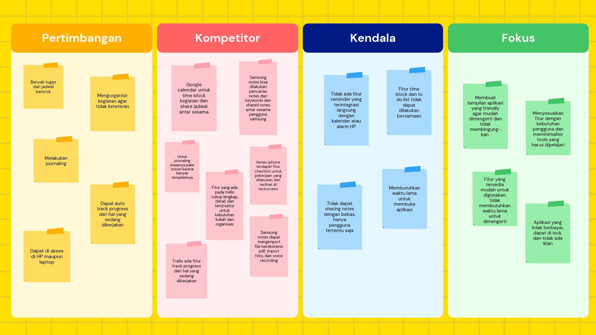
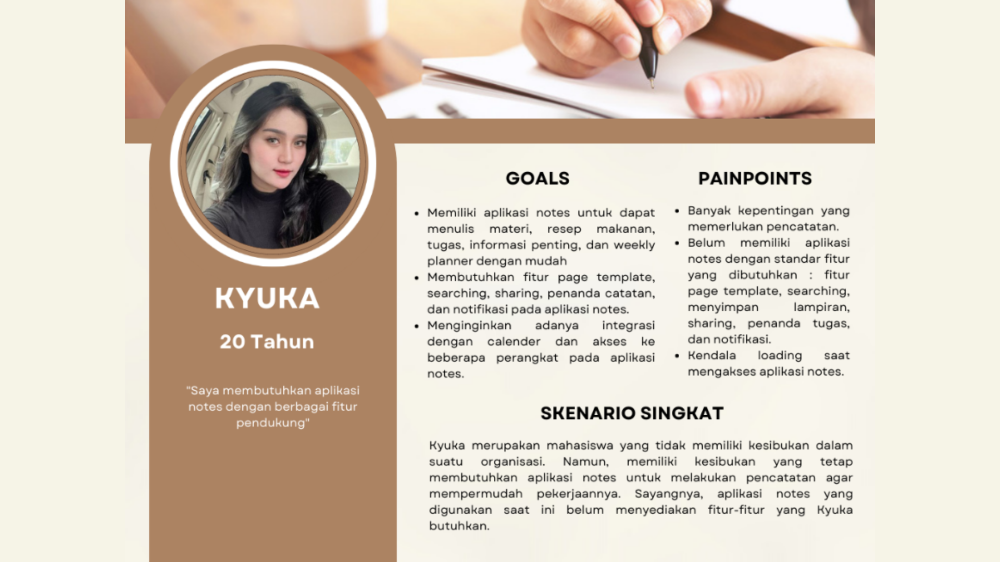
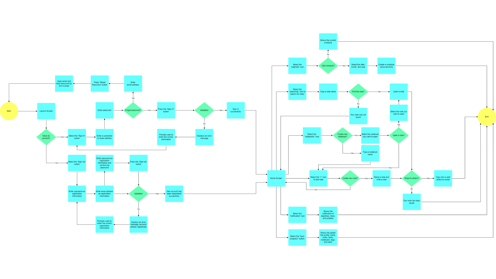
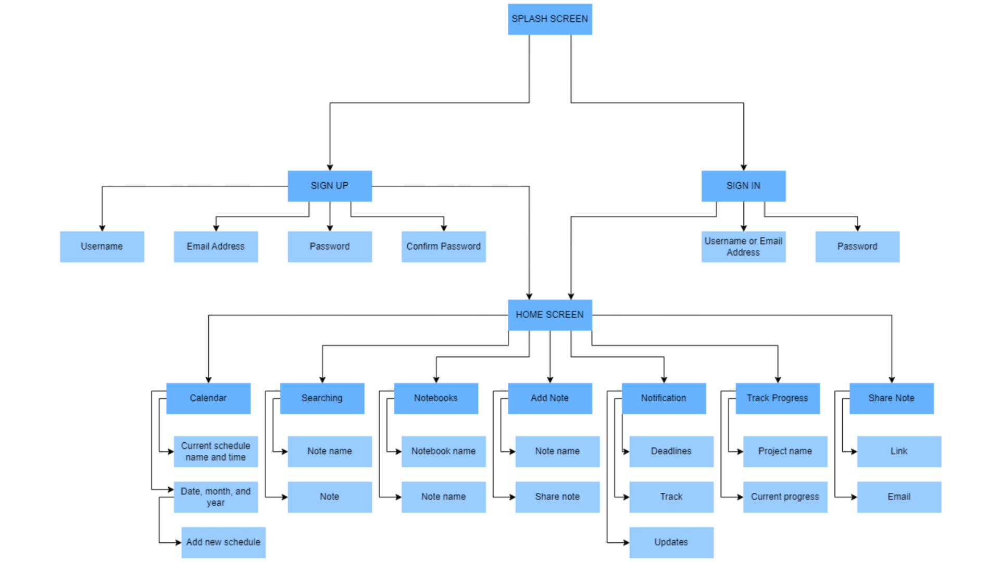

Notes
UX research that turned student pain points into a clear structure for a notes app.
- Role
- UX Researcher
- Timeline
- June 2023
- Stack
- Figma · Canva · Draw.io
- Outcome
- Research-led product definition

About the project
Notes is a mobile app that works like a notebook, a daily planner, and a journal in one place. Users can write notes, keep a journal, share notes, set schedules, and track the progress of their work. The app was made so students can organize their activities without forgetting or double-booking anything. I focused on the research side: understanding what students need, what bothers them in similar apps, and what the app should include.
The challenge
Many note apps already exist, so the challenge was finding out what they still miss. Students told us they struggle with several things: reminders that don’t connect to their calendar or phone alarm, time block and to-do list features that can’t be shared, limited note sharing, and slow loading. At the same time, they didn’t want an app with too many features, because that takes a long time to learn. So the challenge was to find the right balance: enough features to be useful, but still simple and easy to understand.
How we worked
- Defined the research goals. We identified what we wanted to learn: whether students need a notes app with many features, what challenges they faced with existing apps, and what they expected from a new solution.
- Conducted Competitor Research. We analyzed Google Calendar, Samsung Notes, Apple Notes, and Trello to understand how they support note-taking, scheduling, collaboration, and progress tracking.
- Conducted in-depth interviews. We interviewed FIK UPN “Veteran” Jakarta students aged 18-22, including those involved in campus organizations and those who were not. The interviews explored their note-taking habits, activity management, challenges, and expectations for app features.
- Organized the research findings. We organized the interview data into an affinity diagram with four categories: considerations, competitors, obstacles, and focus areas.
- Developed user personas. We created two personas representing students with different levels of campus organization involvement to capture their distinct needs, behaviors, and challenges.
- Formulated design challenge. We translated the research insights into six “How Might We” (HMW) questions, each outlining a potential action and its expected impact.
- Designed the task flow and information architecture. We mapped the user journey through key flows, including sign-up, sign-in, the home screen, and notebooks, while structuring the app’s features into a clear information architecture.
- Designed Sample High-Fidelity Screens. We translated the research findings into selected high-fidelity UI screens in Figma to illustrate the proposed interface and demonstrate how key features could look.
Research outputs
- Affinity diagram: Organized insights from user interviews and competitor research into four themes: considerations, competitors, obstacles, and focus areas. The findings revealed that users wanted to organize tasks, journal, and track progress, but faced challenges such as missing reminders, limited sharing options, and slow loading.
- User persona: Created two personas representing students who participate in campus organizations and those who do not. The persona shown represents a student who is not involved in an organization and needs a note-taking app with features such as page templates, search, and sharing that are lacking in her current apps.
- Task flow: Mapped the key steps users take to navigate the app, from signing up and signing in to accessing the home screen and managing notebooks. The flow also illustrates how users can search for notes, create new notes, share content, and track progress.
- Information architecture: Structured the app’s features and navigation, mapping the flow from the splash screen to the home screen and its main features, including the calendar, search, notebooks, note creation, notifications, progress tracking, and note sharing.




Outcome
Notes was my final project for the UI/UX Basic Study Club 2023 at KSM Android UPNVJ, and my first full UX research process. I went from interviews and competitor analysis to an affinity diagram, persona, task flow, and information architecture, and learned how to turn user pain points into features and a clear app structure.
You can read the full research document here ↗
What's next
Let’s work together.
I’m open to UI/UX design roles and collaborations. Let’s talk about how I can contribute.